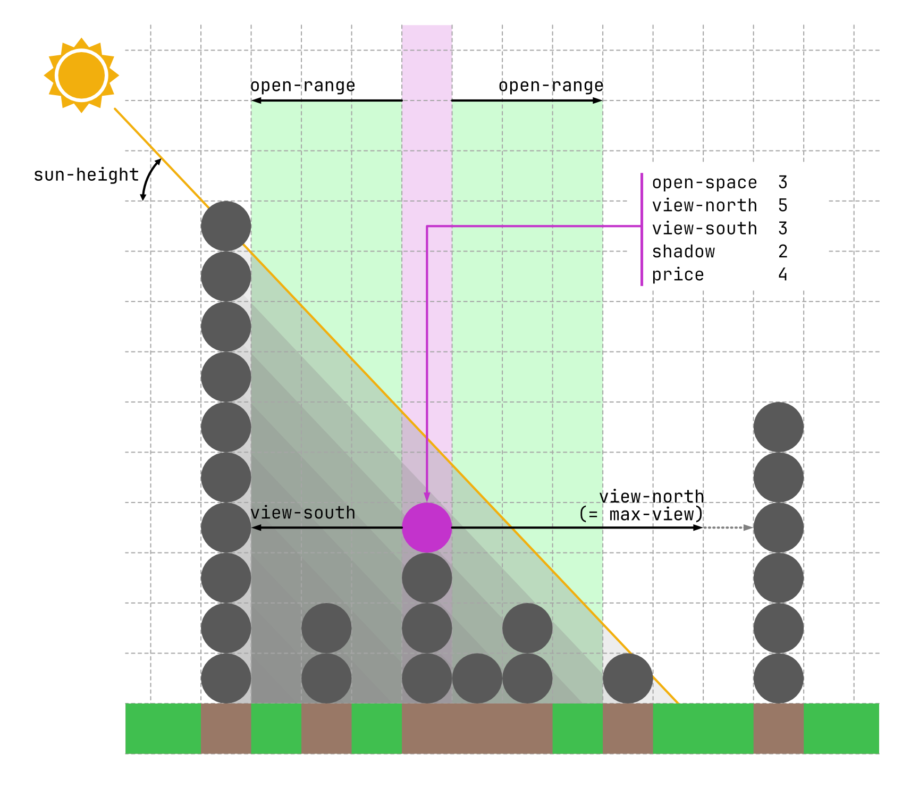

Agent-Based Modelling Assessment 2
Word count: 1,000 words
Research Question
How does the urban morphology change when people and buildings effectively consider externalities of development on the surrounding environment, rather than simply aiming to maximise its own amenity? What is the ideal form of development that can maximise the amenity of all residents within the area?
ODD Description
The model is explained in this section using the ODD (Overview, Design concepts, Details) protocol (Grimm et al., 2006), updated by Grimm et al. (2020).
Purpose and Patterns
The model simulates the amenity of developments and its impact on the surrounding environment, and explores the optimal built-up form considering its externalities. This model observes change in the skyline depending on ‘selfishness’ - the extent to which externalities are considered within individuals’ choices.

Entities, State Variables, and Scales
The model is a 2-dimensional simplification of the 3-dimensional world into a vertical cylinder with dimensions listed in Table 1. The x- and y-axes represent location and height respectively. One patch is the size of a building unit: the width scales to one building’s width, and the height scales to one level height. Representation of components are summarised in Table 2.
| Feature | Value | Additional Information |
|---|---|---|
min-pxcor |
0 | 100 locations in total |
max-pxcor |
99 | The world wraps horizontally to express a wider area. |
min-pycor |
-1 | Patches on pycor = -1 are used to represent the ground. |
max-pycor |
30 | Height of buildings not expected to surpass this value. |
| Representation in model | Component | Explanation |
|---|---|---|
| Patches | Ground and the surrounding environment | Lowermost row of patches (pycor = -1) represent the ground, all others show the surrounding environment |
| Turtles | Building units | Stacked on top of each other to form multi-storey buildings, shown as blue circles in Figure 1. The amenity level is calculated based on the view, access to sunlight, access to open space, and the price of the property on the patch. |
| Time step | One relocation of building unit | In one time step building units are relocated to a different position; time steps are not representations of actual temporal measures. |
Variables are shown in Table 3, Table 4 and Table 5.
| Global Variables | Explanation | Possible Values | Input from Interface |
|---|---|---|---|
floor-area-percentage |
The ratio of building units to the number of spaces in the world | 0 - 500 (%) | Yes |
num-units |
The number of building units (turtles) in model, calculated as world-width \(\times\) floor-area-percentage / 100 |
0 - world-width \(\times\) 5 |
No |
sun-height |
Solar altitude in degrees, used to calculate shadows from buildings | 0 - 90 (deg) | Yes |
selfishness |
Dictates the ratio of amenity and hate when calculating the net-amenity: 100 % indicates turtles only consider amenity of themselves, while 0 % indicates they only consider hate from others |
0 - 100 (%) | Yes |
open-range |
The maximum distance turtles consider accessible to open spaces | 0 - 20 | Yes |
max-view |
The maximum distance turtles consider for the view: any buildings further away are not considered obstructing the view from building unit | 0 - 20 | Yes |
light-weight, view-weight, open-weight, price-weight |
Weight of each variable when calculating amenity and hate. One step of shadow, one unit of view, one open space, and price increase for one level up correspond to the same impact. |
0 - 10 | Yes |
visualise-net-amenity |
When turned on, the net-amenity of each patch and turtle are shown in the view. When off, shadow visualised for patches and amenity for turtles. |
True / False | Yes |
| Patch Variable | Explanation | Possible Values |
|---|---|---|
area-type |
Assigned to ground: classifies if location is an open area or a building exists | Open / Built |
building-height |
Assigned to ground: the height of building on the x position | 0 - max-pycor |
num-neighbours |
Assigned to both ground and above ground: the number of building units within open-range, showing potential users of open space if patch was transformed into one |
0 - (max-pycor * open-range * 2) |
price |
The property price of building unit at patch. Assumed to be linear with height, calculated as pycor + 1 |
1 - (max-pycor + 1) |
shadow |
The strength of shadow cast by tall buildings on the south. Shadows are created on the right side of the building - considered as the northern side (assuming the northern hemisphere context). Shadows are simulated to be more intense according to the distance to the top of shadow. | 0 - maximum |
view-north |
Cells between self to the nearest building unit on the north at the same level, capped at max-view |
0 - max-view |
view-south |
Cells between self to the nearest building unit on the south at the same level, capped at max-view |
0 - max-view |
open-space |
The number of open space the building unit has access to. A unit has access to open spaces within open-range cells horizontally. |
0 - (open-range \(\times\) 2) |
patch-amenity |
The total benefit the building unit at the patch achieves from the view and open space, reducted by the price and shadow, each weighted using the corresponding xx-weight variable. |
any value |
patch-hate |
The total amount of amenity the other building units are losing (or will lose) as a result of a building cell existing in this patch. When not at the top of building, the removal of the unit results in a shorter building, which is the comparison made in this variable. | any value |
patch-net-amenity |
The net amenity the building has on the whole world, calculating the amenity minus the hate from others by considering selfishness. Calculated as (amenity \(\times\) selfishness - hate \(\times\) (100 - selfishness)) / 100 |
any value |
is-buildable? |
Whether a building unit can exist in the patch without floating. true if all cells below are filled to the ground with building units; this can be summarised as: it is located directly above the ground (pxcor = 0), is already occupied with a building unit, or the patch directly below is occupied with a building unit. |
True / False |
| Turtle Variable | Explanation | Possible Values |
|---|---|---|
amenity |
The total amount of amenity of building unit. Equal to patch-amenity of the patch the turtle is on. |
any value |
hate |
The total amount of amenity the unit is decreasing from all other patches. Equal to patch-hate of the patch the turtle is on. |
any value |
net-amenity |
The net amenity the building has on the world considering selfishness Equal to patch-net-amenity of te patch the turtle is on. |
any value |
is-top? |
A boolean variable storing whether the building unit | True / False |
Process Overview and Scheduling
The flowchart is shown in Figure 2. In each time step, amenity measures are calculated for all buildable patches, and one low-performing unit is relocated to maximise the net-amenity. This process is explained in detail at Section 2.7.2.
The urban morphology is observed by the distribution of building heights. Performance of the model is measured using the average amenity of building units. These are reported every time step.
Design Concepts
This report covers the basic principles, objectives and observation of the ODD protocol.
Basic Principles
Large scale developments provide high amenity to its occupants, but impact the surrounding environment by blocking views and sunlight. The significance of these externalities are highlighted by regulations aiming to maintain these benefits (Tavernor and Gassner, 2010; Li et al., 2019), lawsuits between large-scale developments and surrounding residents (Sorensen, 2011), and environmental impact assessments internalising externalities (Arts, Tomlinson and Voogd, 2005; Glasson and Therivel, 2013). This model explores the optimal vertical allocation of development by quantifying and embedding externalities into individual decisions.
Objectives
Each unit seeks to maximise the net-amenity, shown in Table 5 and explained at Section 2.7.1. They aim to achieve an ‘optimal balance’ between maximising its satisfaction and mitigating its impact on surroundings.
Observation
Two factors are observed: distribution of building heights and the amenity of each unit. Each criteria is observed in plots, monitors, and the view within the interface with measurements summarised in Table 6.
| Factor | Sub-factor | Observation | Explanation |
|---|---|---|---|
| Building height | Distribution | Histogram / standard deviation of height | A high standard deviation indicates existence of high-rise buildings and open spaces, low variance indicates buildings aligned around mean height of (floor-area-percentage / 100) |
| Temporal change | Change in standard deviation of height | Temporal change of standard deviation is shown with plot on the interface. | |
| Amenity | Distribution | Histogram of amenity |
The distribution of amenity illustrates the inequality between each unit. The colour of the turtle also illustrates the amenity of each turtle. |
| Temporal Change | Change in mean amenity and hate |
Shown in plot in interface. While amenity is the main factor to observe, the hate is shown as well. |
Initialisation
The model is initialised as an abstract physical space, accommodating units determined by the floor-area-percentage. Initialisation procedure is as follows:
- Patches are set up, the bottom row (
pycor = -1) as the ground. - Number of building units are calculated from the
floor-area-percentageand the width of world. - Units are allocated random x-coordinates and stacked. Model is initialised differently every time due to this random allocation.
Input Data
The model does not use input data to represent time-varying processes.
Submodels
The calculation of amenity measures and the relocation process are explained in this section.
Calculation of Amenity
Amenity is calculated from four components: view, access to open space, accessibility to light, and price, as illustrated in Figure 3. Table 7 shows how each measure is quantified.

| Component | Notation | Methodology | Range |
|---|---|---|---|
| View | \(v(k)\) | Number of columns between the nearest building unit with the same height on each side, implemented in the model as view-north and view-south respectively. Each side capped at the global variable max-view |
0 - max-view for each side |
| Open Space | \(o(k)\) | Number of open spaces (ground with no building units) within the horizontal distance of open-range from the unit. |
0 - (open-range \(\times\) 2) |
| Sunlight | \(l(k)\) | Determined by the shadows cast by other building units. For each unit, the area of shadow made by itself and all units below are considered to be the triangular area north of the building, at an angle equal to the height of the sun. A shadow level of 1 is added to patches within this area, and iterated for all building units. Overlap of shadows calculated by units on the same building automatically create a more intense shadow at the bottom: one cell down, one level increase in shadow intensity, as observable as the gray-to-black gradation visible in Figure 1. Patches with multiple high-rise buildings on its south are simulated to have a more intense shadow, replicating the cumulative impacts in real life. | - |
| Price | \(p(k)\) | Determined solely by the height of the building unit as (pycor + 1). |
1 - (max-pycor + 1) |
For patch \(k\), amenity \(a(k)\) is calculated by Equation 1. Each component is weighted by the corresponding weight parameter (\(\alpha\)).
\[ a(k) = \alpha_v v(k) + \alpha_o o(k) - \alpha_l l(k) - \alpha_p p(k) \tag{1}\]
The hate (\(h(k)\)) is the amenity lost due to the existence of, or if there existed, a building unit at \(k\), by blocking views, casting shadows, and consuming open space. This is calculated by Equation 2, comparing the current environment and when unit is removed. Unit removal makes the building height lower, equivalent to removing the top unit of building.
\[ h(k) = \sum_j \Delta_k a(j) = \sum_j \left(a_k(j) - a_{\bar{k}}(j)\right) \tag{2}\]
- \(j\): patches influenced by \(k\)
- \(a_k(j)\):
amenityof patch \(j\) if building unit exists in \(k\) - \(a_{\bar{k}}(j)\):
amenityof patch \(j\) if building unit does not exist in \(k\)
The net-amenity \(A_k\) is calculated by Equation 3, aggregating amenity and hate by the weighting parameter selfishness (\(\sigma\) (%)). With 100% selfishness, units only consider their own amenity, and only consider impact mitigation on others when selfishness is 0.
\[ A_k = \frac{\sigma a(k) - (100 - \sigma)h(k)}{100} \tag{3}\]
The amenity, hate, and net-amenity of turtles are equal to corresponding values of the patch the unit resides.
Relocation of Units
One unit within the 5 lowest net-amenity is chosen to relocate to vacant buildable patches: either the top of an existing building or an open space. Units move to the patch that maximises the net-amenity.
Brief Methodology
The objective is to explore the relationship between selfishness and the amenity for different densities, and identifying the optimal morphology, given a specific combination of weight for amenity measures. BehaviorSpace is used to simulate different conditions in density and selfishness to maximise amenity. Variables and measurements are organised in Table 8 and Table 9. Each condition is repeated 10 times.
| Variable | Range | Increments | Additional notes |
|---|---|---|---|
floor-area-percentage |
100 - 500 | 100 | This factor is considered as given in an actual urban development context - a direct comparison between different percentages requires consideration. |
selfishness |
0 - 100 | 10 | Optimal selfishness within a fixed floor-area-percentage is explored. The optimal value is hypothesised at 50 % where net-amenity considers gains and losses equally - the morphology in this state is our research interest as well. |
| Measurement | Explanation |
|---|---|
mean amenity of building units |
Measurement to maximise in BehaviorSpace model |
standard deviation of building-height |
To gain insights on the morphology, by comparing the relationship between the building height and amenity. |
Measurements are observed under the usual state, assumed as ticks = floor-area-percentage. For each density level, we will determine selfishness that achieves the maximum amenity and the variance of the building height under the optimal condition. This will provide insights on the ideal environment maximising the overall amenity.